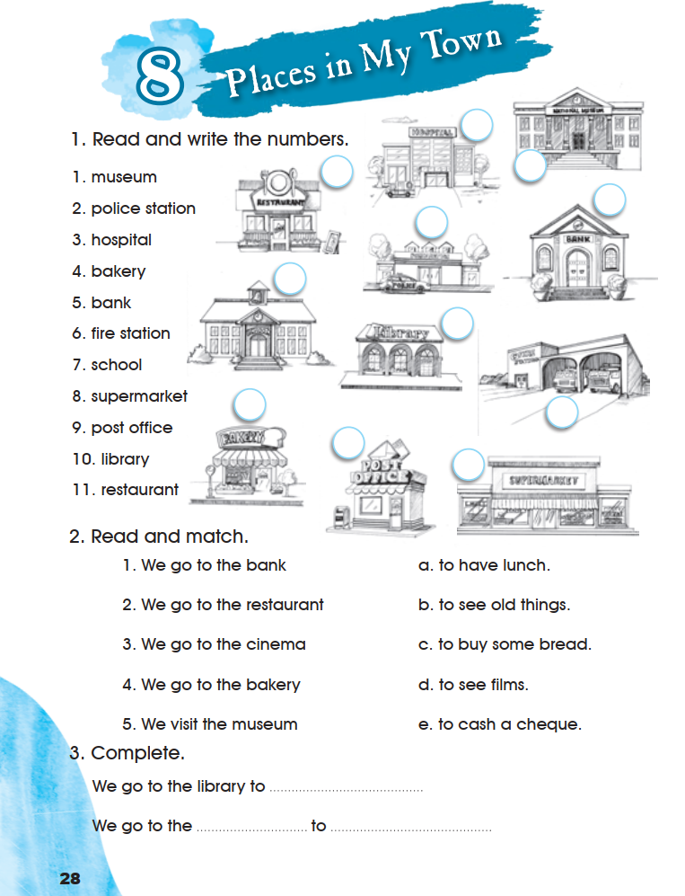
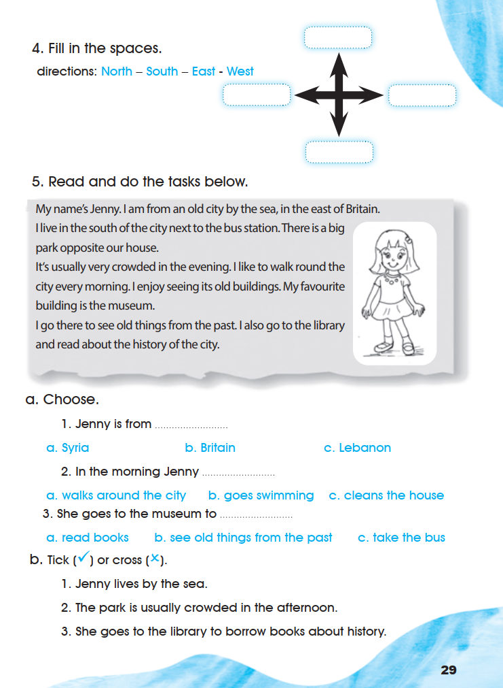
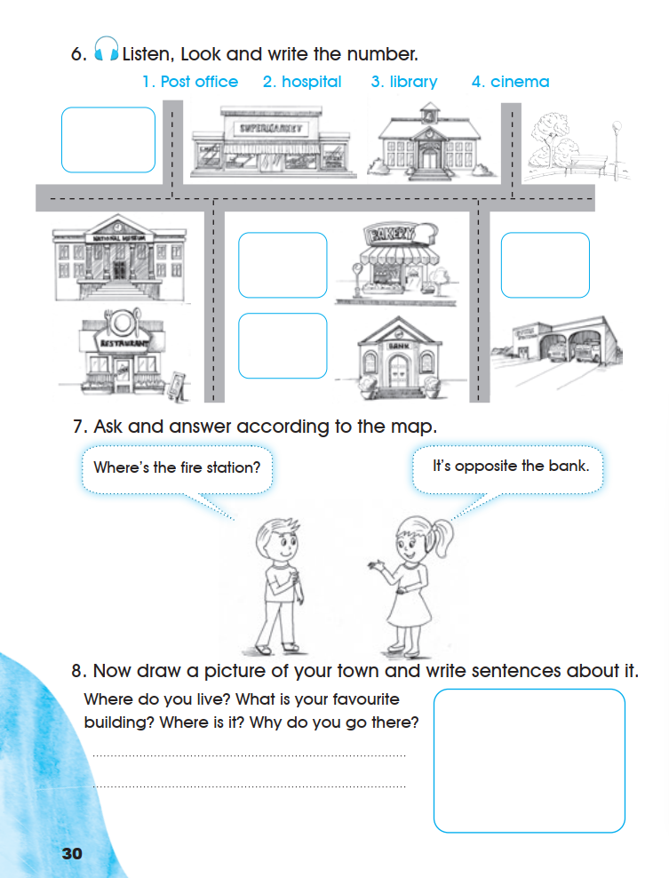

Workbook · Places in My Town
Every printed exercise is shown beside its original byte-preserved scan and an accessible transcription. No audio was supplied, so listening tasks stay unavailable for verification; inferred and illustrative answers are labelled.
Workbook page 28 · place numbering, purposes and open completion

Accessible transcription
8 Places in My Town 1 Read and write the numbers. 1. museum 2. police station 3. hospital 4. bakery 5. bank 6. fire station 7. school 8. supermarket 9. post office 10. library 11. restaurant Pictures with empty circles: museum, police station, hospital, bakery, bank, fire station, school, supermarket, post office, library, restaurant. 2 Read and match. 1. We go to the bank a. to have lunch. 2. We go to the restaurant b. to see old things. 3. We go to the cinema c. to buy some bread. 4. We go to the bakery d. to see films. 5. We visit the museum e. to cash a cheque. 3 Complete. We go to the library to ................................ We go to the ........................ to ........................ 28
Source-faithful study notes
Source-derived inference (not a printed key): exercise 1 picture numbers in printed list order = museum 1, police station 2, hospital 3, bakery 4, bank 5, fire station 6, school 7, supermarket 8, post office 9, library 10, restaurant 11; exercise 2 = 1e, 2a, 3d, 4c, 5b.
Exercise 1 · Write the picture numbers
Inferred image-to-number matching; not an official answer key.
Show inferred numbering
Exercise 3 · Complete two purpose sentences
Open/personal: illustrative examples only; answers vary.
Show illustrative examples (not official answers)
Workbook page 29 · compass labels and Jenny passage

Accessible transcription
4 Fill in the spaces. directions: North – South – East – West Compass diagram with four empty boxes. 5 Read and do the tasks below. My name’s Jenny. I am from an old city by the sea, in the east of Britain. I live in the south of the city next to the bus station. There is a big park opposite our house. It’s usually very crowded in the evening. I like to walk round the city every morning. I enjoy seeing its old buildings. My favourite building is the museum. I go there to see old things from the past. I also go to the library and read about the history of the city. a. Choose. 1. Jenny is from ... Syria / Britain / Lebanon 2. In the morning Jenny ... walks around the city / goes swimming / cleans the house 3. She goes to the museum to ... read books / see old things from the past / take the bus b. Tick (✓) or cross (×). 1. Jenny lives by the sea. 2. The park is usually crowded in the afternoon. 3. She goes to the library to borrow books about history. 29
Source-faithful study notes
Source-derived inference (not a printed key): exercise 4 = North top, South bottom, West left, East right; exercise 5a = 1 Britain, 2 walks around the city, 3 see old things from the past; 5b = ✓, ×, ✓.
Exercise 4 · Label the compass
Inferred from the printed compass word bank; not an official answer key.
Show inferred compass labels
Workbook page 30 · listening map and personal town writing

Accessible transcription
6 Listen, look and write the number. 1. Post office 2. hospital 3. library 4. cinema Map with four empty boxes. 7 Ask and answer according to the map. Where’s the fire station? It’s opposite the bank. 8 Now draw a picture of your town and write sentences about it. Where do you live? What is your favourite building? Where is it? Why do you go there? 30
Source-faithful study notes
Exercise 6 · Four listening boxes
Audio-dependent exception: no recording was supplied; no model and no score.
This activity is an explicitly disclosed exception: no model is published.
Exercise 7 · Map questions and answers
Printed model plus image-derived illustrative pairs; not official answers.
Show printed model and an illustrative map pair (not official answers)
Exercise 8 · Write about your town
Open/personal: illustrative examples only; drawing not checked.